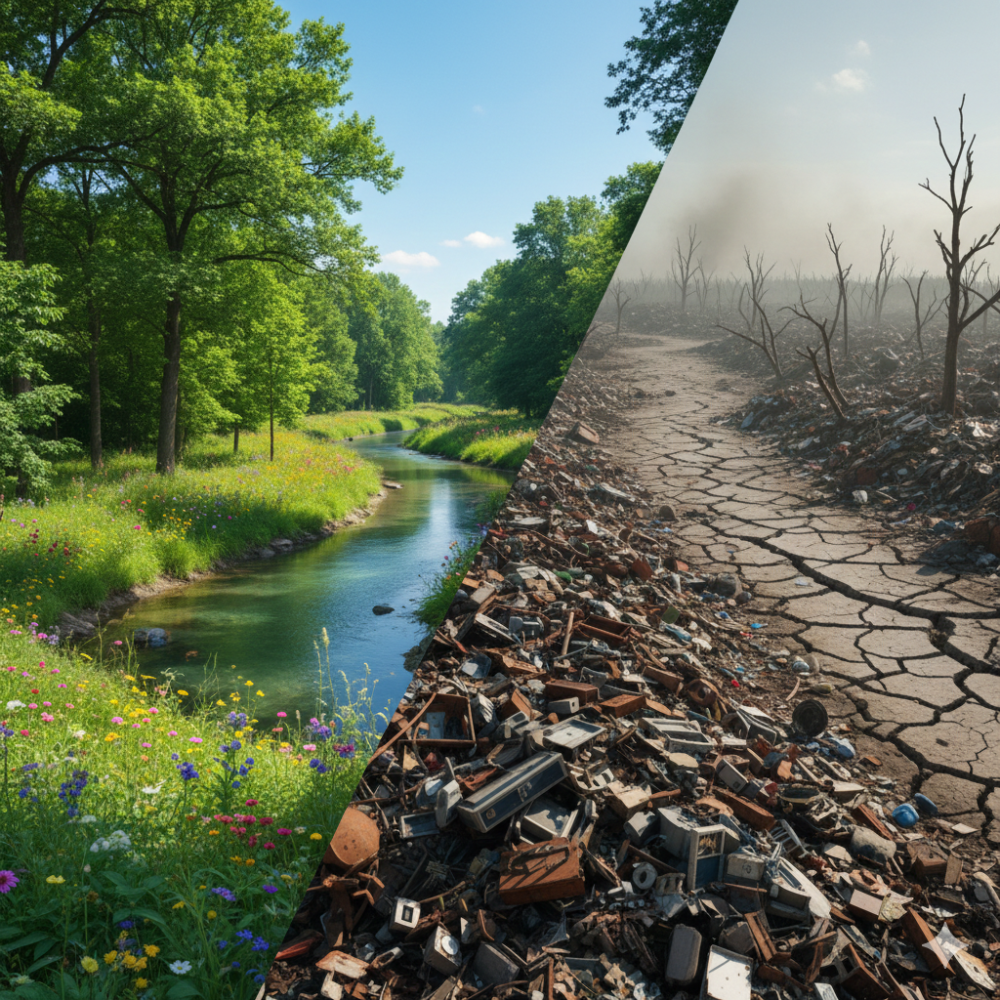
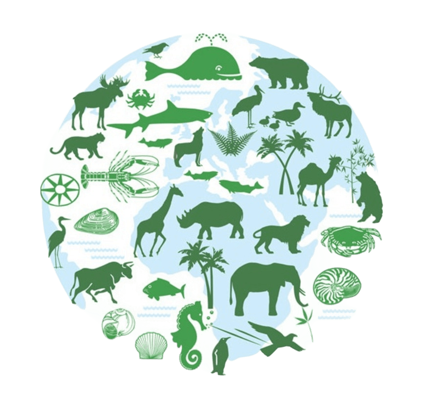

Наше рішення

1 рішення
Охорона лісів
Ліс дарує прихисток тисячам видів живих істот і є джерелом чистої води та свіжого повітря для кожного з нас. Захищаючи ліс від незаконних вирубок та пожеж, ми захищаємо свій дім і право на здорове життя. Це наша спільна відповідальність — оберігати те, що природа створювала століттями.

2 рішення
Раціональне використання ресурсів
Ми споживаємо ресурси планети у 1,7 раза швидше, ніж вона здатна їх відновлювати. Безконтрольне використання енергії, води та сировини призводить до незворотного виснаження надр та накопичення мільйонів тонн сміття, яке не переробляється. Раціональне використання — це єдиний спосіб зупинити екологічний колапс, спричинений нашою культурою надмірного споживання.

3 рішення
Захист біорізноманіття
Сьогодні швидкість вимирання видів у 1000 разів вища за природну через діяльність людини. Зникнення навіть однієї ланки в екосистемі запускає ланцюгову реакцію, що загрожує продовольчій безпеці та стійкості всієї планети. Захист біорізноманіття — це не просто порятунок окремих тварин, а збереження генетичного коду Землі, який неможливо відновити.

4 рішення
Дбайливе ставлення до ґрунтів
Родючий шар землі формується тисячоліттями, але може бути знищений за кілька років неправильного господарювання. Впровадження органічного землеробства, сівозміни та відмова від агресивних хімікатів дозволяють зберегти мікробіом ґрунту. Здорова земля — це не лише багатий врожай, а й ефективне поглинання вуглецю, що допомагає стримувати глобальне потепління.

5 рішення
Екологічна освіта
Знання — це перший крок до змін. Екологічна освіта формує нове мислення, де відповідальне споживання та повага до природи стають нормою життя. Навчаючи дітей та дорослих основам екології, ми створюємо суспільство, здатне приймати правильні рішення для збереження планети.